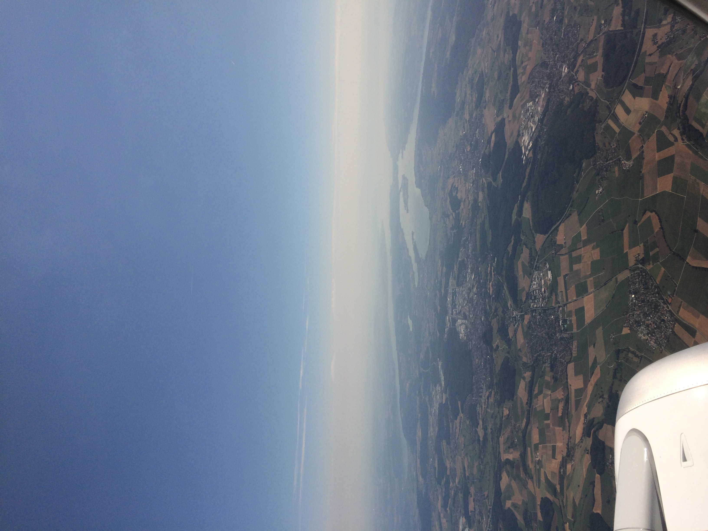
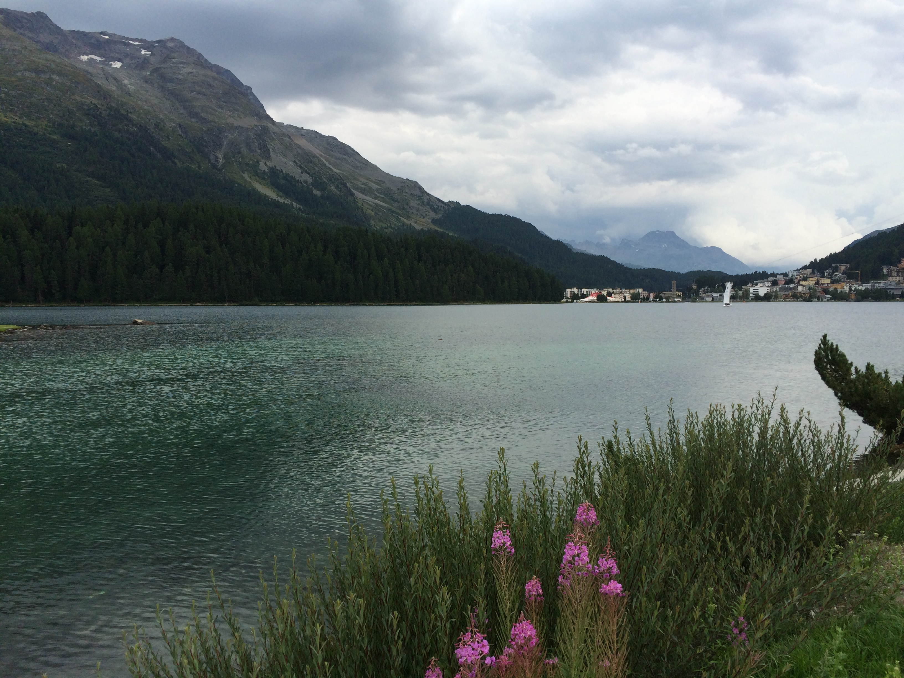
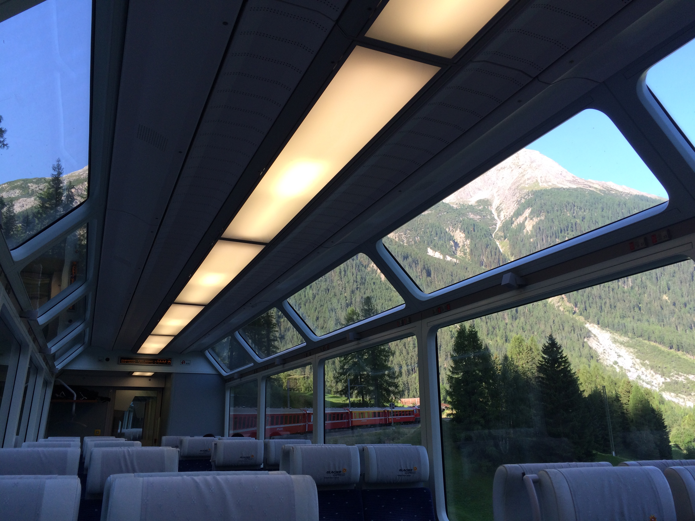
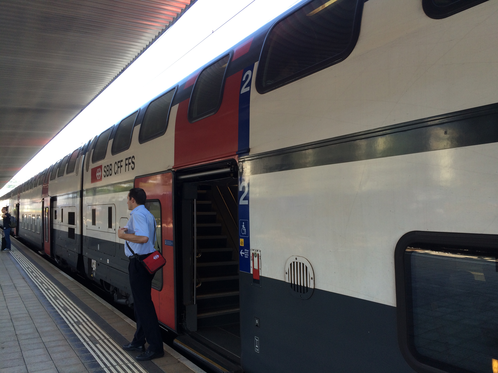
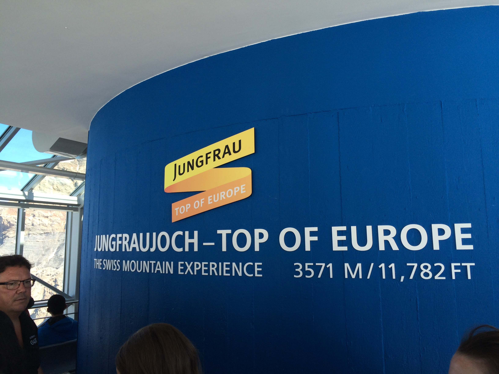
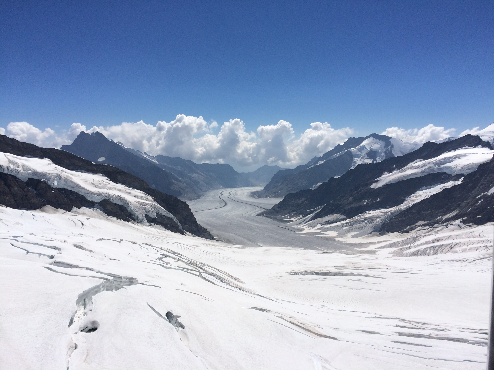

スイスの超高級リゾート地・サンモリッツ
プラハ空港からスイスのチューリッヒ空港に2時間かからないくらいで着いた！！ 
 空港から鉄道でサンモリッツに移動した！！ おすすめのレストランはエンジャディーナ。気さくな雰囲気が人気で地元の人にも愛されている。 写真はサンモリッツ湖畔。
グラッシャーエクスプレスに乗ってサンモリッツからクールって所まで移動しその後乗り換えてツエルマットまで移動
 途中にあるラントヴアッサー橋は高さが最高71mあり撮影場所として人気 路線が世界遺産に登録されており、車窓から氷河がみえるなど景観にも優れている
日本語発見!?
ツェルマット→インターラーケン・オストにIC使って移動し インターラーケン・オスト→グリンデルワルトに電車使って移動
 途中のユングフラウヨッホはヨーロッパ最高地点の駅で、氷河や山岳地帯であることを
利用した観光業が行われている。駅から展望台までが近いのも魅力の一つ。
で、展望台からの景色は言葉では表せないくらい美しい。
途中のユングフラウヨッホはヨーロッパ最高地点の駅で、氷河や山岳地帯であることを
利用した観光業が行われている。駅から展望台までが近いのも魅力の一つ。
で、展望台からの景色は言葉では表せないくらい美しい。
これに乗ると25分で、

絶景！！
いざ展望台へ！
到着！
おおおおおお！！
グリンデルワルト→インターラーケン・オストまでよ電車 インターラーケン・オスト→ジュネーブまではIC使って移動
 ジュネーブは国連のヨーロッパ本部やルソー島といった名所のほか
レマン湖畔の街並みやこの地域の特産品でもある時計の販売も行われている。
レマン湖畔は訪問当日大雨だったためローザンヌしかいけていない。
ジュネーブは国連のヨーロッパ本部やルソー島といった名所のほか
レマン湖畔の街並みやこの地域の特産品でもある時計の販売も行われている。
レマン湖畔は訪問当日大雨だったためローザンヌしかいけていない。